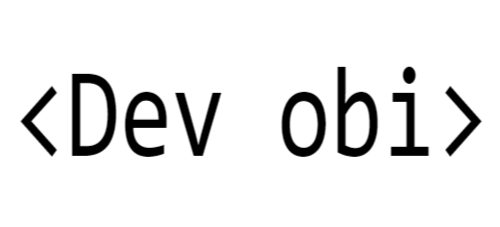

My Work
A selection of my range of work

Software Engineer
Dev based in Winnipeg
Hello! I’m a software development student with a strong interest in full-stack web development and software engineering. I enjoy building practical, user-focused applications that solve real problems and make everyday tasks easier.
My journey into technology began with a curiosity for how software works and how digital tools can improve people’s lives. Through my studies and personal projects, I have gained experience in programming, web development, database design, debugging, and problem-solving. I am currently looking for a co-op opportunity where I can apply my skills, continue learning, and contribute to meaningful projects.
Skills and Expertise
I have developed a strong foundation in software development, including:
I am currently seeking a co-op opportunity where I can apply my full-stack development skills in a real-world environment.
I’m particularly interested in building web applications that connect frontend interfaces with backend systems and databases.
I have hands-on experience developing RESTful APIs and working with relational databases such as MySQL. I am eager to contribute to a team by writing clean, maintainable code and supporting the development of scalable features.
I focus on writing efficient and reliable code, with attention to performance and usability.
In my projects, I work on improving query efficiency, structuring code for readability, and minimizing unnecessary processing
I am also learning and applying foundational optimization techniques such as reducing load times, improving database queries, and implementing simple performance improvements where needed.
I work effectively in team environments and am comfortable collaborating using Git and GitHub for version control. I understand the importance of clear communication, meeting deadlines, and adapting to feedback during development.
As a co-op student, I bring a strong willingness to learn, take initiative, and contribute wherever needed. I am committed to continuously improving my technical and problem-solving skills while supporting team goals.
A selection of my range of work